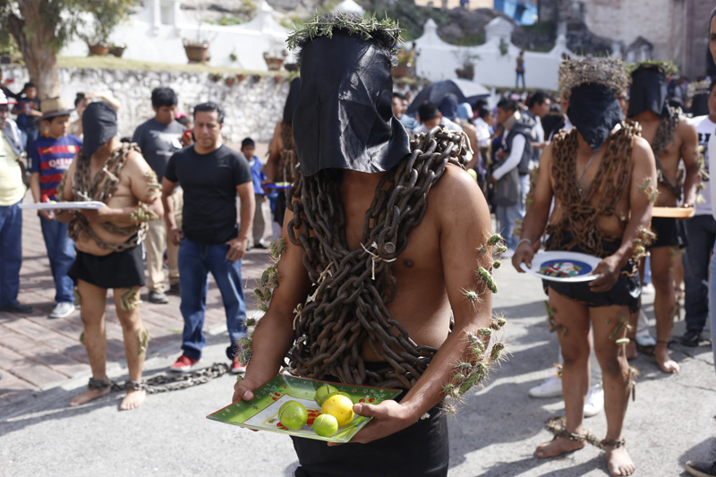

La Semana Santa es el momento litúrgico más intenso de todo el año. esta semana la debemos dedicar a la oración y la reflexión en los misterios de la Pasión y Muerte de Jesús para aprovechar todas las gracias que esto nos trae.Para vivir la Semana Santa, debemos darle a Dios el primer lugar y participar en toda la riqueza de las celebraciones propias de este tiempo litúrgico.
Durante la Semana Santa, el católico cumple con diversos actos, como: procesiones, escenificación del drama de la muerte y pasión de Cristo. Los penitentes se someten a duras cargas como símbolo de su auto sacrificio y, en el día Viernes Santo, los fieles deben de guardar ayuno y abstenerse de comer carne.
Católicos:La Semana Mayor para los católicos es la época en la que se recuerda y celebra los hechos más relevantes en la vida de Jesús de Nazaret (la Pasión, Muerte y Resurrección), comenzando con el llamado Domingo de Ramos y finalizando el Domingo de Resurrección o también llamado de Pascua.Las tradiciones católicas durante la Semana Mayor incluyen procesiones con diferentes imágenes de Cristo, la Virgen y los santos; vía crucis en los templos, por las vías de las ciudades o en cerros tutelares, y varias ceremonias especiales.
Cristianos evangélicos:Para la iglesia cristiana, la Semana Santa es el tiempo para recordar la muerte de Cristo. Para conmemorarla, se congregan en una jornada de oración y adoración, la cual inicia el Jueves Santo a las 9:00 de la noche y se extiende por 24 horas.Ellos no conmemoran la muerte de Jesús sino su resurrección. En estos días hacen reuniones para recordar la noche de la entrega de Cristo y para conmemorar la resurrección. se congregan en una jornada de oración y adoración. En esta reunión se dan cita grupos artísticos y musicales, ya que los cristianos creen que “Dios habita en medio de la alabanza”
Mormones:Por otro lado, la Semana Santa para los miembros de la Iglesia de Jesucristo de los Santos de los últimos Días más conocidos como mormones, les sirve para reflexionar como cada semana, sobre el sacrificio que hiciera Cristo y partir de ello afianzar la unión familiar.Los Santos de los Últimos Días, al igual que muchas otras personas religiosas, usan ropa especial con significado religioso. A menudo los ministros y sacerdotes cristianos usan trajes o cuellos especiales para identificarse. En la sociedad secular, los policías, los jugadores de baloncesto, o enfermeras usan ropa especial para identificarse con un grupo en particular. Estas prendas de vestir proporcionan un sentido de pertenencia y un recordatorio personal de lo que la pertenencia a ese grupo implica
Una de las procesiones de Viernes Santo que más acapara la atención es la registrada en Atlixco con la presencia de los Engrillados, personas que encadenadas recorren las calles de referido municipio, las cuales portan coronas de espinas, así como púas o puntas que se colocan en distintas partes del cuerpo, principalmente en hombros y pies.

Cada Viernes Santo en Atlixco, docenas de hombres participan en la procesión de Los Engrillados, una tradición con más de 100 años.

Ya sea por manda o penitencia, los hombres encapuchados caminan al rededor de tres kilómetros, partiendo de la Iglesia de San Francisco, con espinas incrustadas al cuerpo y cargando cadenas de más de 50 kilogramos.

La gente del lugar adorna las calles con alfombras de aserrín y los fieles hacen la procesión con las imágenes de diferentes parroquias. Algunos de los participantes en esta procesión, llevan más de 50 años caminando cada Viernes Santo.


La celebración de Semana Santa es para los poblanos una de las conmemoraciones más importantes del año cristiano; durante estos días aquellas personas que profesan alguna de las diferentes confesiones de la fe cristiana acuden a las iglesias más emblemáticas de Puebla para recordar la Pasión, Muerte y Resurrección de Jesús de Nazaret.Una de los actos mas significativos durante la semana santa es la tradicional Procesión de Viernes.La Procesión de Viernes Santo, tiene como objetivo ser un encuentro de reflexión y renovación espiritual con el Señor, en su veinticinco edición, las cinco imágenes que recorren las principales calles del Centro Histórico de Puebla son consideradas entre las más representativas de Puebla, simbolizan este acontecimiento solemne de Fe, donde se contemplan con devoción la pasión y muerte de Jesucristo.
Esta tradición piadosa rescatada desde el año 1991 en Puebla, representa el caminar de Jesús, donde las imágenes más antiguas y con mayor número de devotos salen a recorrer las calles de Puebla, escenificando los misterios de la redención, culminando en punto de las tres de la tarde en la Catedral, para recordar la muerte de Jesucristo.
Desde el inicio de esta nueva etapa se decidió que únicamente cinco imágenes fueran cargadas en el cortejo, dos de la Virgen María y tres de Jesucristo. Las dos marianas aluden al momento dramático, pues son la Virgen Dolorosa y la Virgen de la Soledad y las otras de Jesús cargando la cruz a cuestas.
La Semana Santa no tiene una fecha definida, aunque casi siempre se presenta entre los meses de Marzo y Abril, esto debido a que obedece al calendario católico y del inicio de la cuaresma que son cuarenta días previamente de la preparación de la Pascua.
En Iztapalapa tiene lugar una ceremonia, fiesta y representación de la Pasión, que no responde ni a una narración sacra, ni a un teatro tradicional: es una expresión de múltiples aportaciones que se funde en una particular sincretización.

Iztapalapa, una de las 16 delegaciones que constituyen el Distrito Federal, ha sustituido sus canales, chinampas y trajineras con verduras y flores, por ejes viales y el Metro. Tiene en el Cerro de la Estrella, en sus templos, plazas y jardines de Ia cabecera, los espacios sagrados donde se escenifica cada año la representación ritual por excelencia. La coexistencia de Iztapalapa con la gran urbe, no ha logrado borrar Ias viejas costumbres; sus habitantes renuevan sus lazos de amistad, de compadrazgo y vecindad, de pertenencia e identidad con el barrio y con Ia localidad en las distintas fiestas de su calendario, pero es en la Semana Santa cuando éstos aparecen con mayor fuerza.
Los misioneros utilizaron el teatro para catequizar a los antiguos mexicanos y desterrar asi las prácticas religiosas anteriores.Las escenificaciones de la pasión,conmovian profundamente a los espectadores
Del pasado llegan las voces que amalgaman en el presente una forma particular de sincretismo,donde las viejas costumbres,los componentes internos y extremos del drama,se llenan de nuevos contenidos sin desalojar completamente a las anteriores.

La Procesión del Silencio de San Luis Potosí es un evento anual que conmemora la pasión y muerte de Cristo y a Nuestra Señora de la Soledad. Ocurre en la noche del Viernes Santo, empezando en el Templo del Carmen, de donde es originario, y el recorrido sigue a través de las calles del centro histórico de la ciudad de San Luis Potosí. Durante el evento se encuentran los sonidos de tambores y cornetas, pero ningún participante o espectador habla, ameritando su nombre. Es una de las celebraciones de Semana Santa más importante de México y fue declarada parte del patrimonio cultural del estado de San Luis Potosí en el 2013.
El viernes es el día más esperado en la ciudad o, mejor dicho, es la noche más esperada. A eso de las ocho da inicio la insigne Procesión del Silencio que, a decir de muchos, es la más conmovedora del país. Dicho evento se ha celebrado sin interru´pción desde 1954.Partiendo de la iglesia del Carmen, las cofradías desfilan a paso lastimero, cargando las pesadísimas imágenes de sus templos. El ritmo de tambores y trompetas es invocativo; la luz de las velas completa el cuadro surrealista.
Organizado por la Asociación de Tradiciones Potosinas,la procesión se conmemora como un acto de luto por la Pasión de Cristo.Es una recreación del Via Crucis, con cada estación marcada por un paso de misterio con imágenes de pasión.Esta procesión es una de las celebraciones más importantes de la Semana Santa en México, uno de los eventos religiosos más importantes para el estado de San Luis Potosí y emblema para la ciudad.También es un evento turístico muy grande, donde asisten aproximadamente más de 160.000 visitantes de la ciudad, con cerca del quince por ciento que vienen de fuera de México.

La procesión del silencio de los hombres que se da el día jueves santo, rememora la agonía y oración de Jesús en el huerto de los olivos, la traición de Judas y el prendimiento de Jesús. La procesión del silencio de las mujeres que se da el día sábado santo, se integra en una especie de peregrinación de carácter reflexivo (sin cánticos ni rezos) para acompañar a la Virgen María en sus horas de pesar por el calvario y la muerte de Cristo.
Sin embargo la fe cristiana abarca distintas doctrinas, en este caso, buscamos la opinión de un pastor evangélico, Josué Morales de la iglesia Cary Church of God, el pastor explica que dentro de la congregación se realizan algunos rituales, como: el amanecer del jueves, el lavatorio de los pies, la última cena, el camino a la cruz y la resurrección; siempre recordando la importancia y significado que encierran estos rituales, que no se trata de una costumbre cada año, sino de darle la importancia que merece la cruz y la resurrección de Cristo.
El inicio de esta tradición, debida a la gran religiosidad profesada por los habitantes de este pueblo minero, data, según los cronistas, de 1598, aunque en los archivos de la parroquia de Santa Prisca y San Sebastián se encuentran los registros de los primeros permisos otorgados por la Iglesia para celebrar una procesión del Cristo del Santo Entierro, en 1600. Esta celebración, que continúa hasta la fecha, se lleva a cabo, según lo marque el calendario católico, en el mes de marzo o abril, de acuerdo con el edicto del Concilio de Nicea, que en 325 estableció que la Pascua o Domingo de Resurrección se realizara el primer domingo que sigue a la luna llena que aparece después del equinoccio de primavera.
Desde 40 días previos a la Semana Mayor, se realizan ceremonias con motivo de los Seis Viernes de Cuaresma, correspondiendo a cada parroquia un día: el primer viernes a Tecalpulco; el segundo, a Acamixtla; el tercero a Tehuilotepec y Taxco el Viejo; el cuarto a La Veracruz; el quinto, se lleva a cabo en Atzala; y, el sexto, en Paintla.
Dentro de la gama de festejos religiosos para los Oaxaqueños la cuaresma y la Semana Santa reviste gran significado.
Esta tradicion arranca desde la epoca colonial,y mas ciertamente desde cuando los padres jesuitas consagraron una espaciosa capilla de su templo magnifico a la virgen de los dolores,tributando culto solemne a la imagen.
El Sexto Viernes de Cuaresma, es el viernes de Dolores, una tradición de gran devoción en donde se rinde culto a la madre de Dios, colocando el Altar de la Virgen de Dolores, llegando así a la Semana Santa, la cual inicia para los Oaxaqueños con el Domingo de ramos, rememorando la entrada de Jesús en Jerusalen y la Festividad del Señor del Burrito en la Población de San Antonino Castillo Velasco.
En la ciudad se acostumbra a dar aguas frescas y típicas de la región a todo aquel que acudía a los atrios de las iglesias, Actualmente se ofrecen de manera gratuita en: iglesias, casas particulares, hoteles, escuelas, restaurantes, dependencias gubernamentales, etc., a los transeúntes para que se deleiten con los diversos sabores, olores y colores característicos de esta festividad.
El Lunes Santo se celebra con gran respeto en la Villa de Zaachila con una serie de actividades costumbristas relacionadas con la Semana Mayor, el Martes Santo con la Festividad del Señor de las tres caídas en el barrio de Xochimilco , el miércoles santo hay exhibiciones de los estandartes y relicarios de las diferentes cofradías y relicarios de los diversos barrios de la ciudad de Oaxaca, el Jueves Santo se realiza después de las seis de la tarde la Visita de Los Siete Templos, en donde los altares representan la última cena de Jesús con sus apóstoles y el Viernes Santo se realiza la Procesión del Silencio en donde participan las diversas cofradías de la ciudad de Oaxaca.